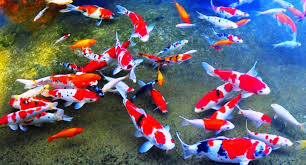

Telah lama ikan hias memiliki banyak penggemar. Pecinta ikan hias di Indonesia
sendiri terbilang sangat tinggi. Dimana peminat ikan hias selalu meningkat dari
waktu ke waktu. Menjalakan peluang bisnis ikan hias memang terbilang sangat menjanjikan.
Dimana lewat bisnis ikan hias, Anda akan mampu menebalkan kantong secara mudah dan cepat.
Dengan memiliki bekal hobi dengan ikan hias, Anda akan mudah memulai bisnis ikan hias.
Prospek bisnis ikan hias sendiri memang dikatakan sangat cerah, dimana dari waktu ke
waktu terus cemerlang. Bisa dibilang bisnis ikan hias tak pernah ada matinya sejak
dahulu hingga sekarang. Potensi bisnis ikan hias yang mampu mencetak uang dengan jumlah
besar membuat bisnis ini diminati oleh banyak orang. Untuk bisa menerjuni bisnis ikan hias
sendiri memang tidaklah sulit seperti yang dibayangkan. Dimana bisnis ikan hias dapat
dimulai dan dijalankan bagi siapa saja, khususnya yang gemar dan hobi dengan ikan hias.
Untuk bergelut dengan usaha ikan hias juga tidak membutuhkan modal dengan nilai yang besar.
Modal awal yang dibutuhkan dalam memulai usaha ikan hias relatif kecil. Kunci sukses dalam
menggeluti bisnis ikan hias adalah memiliki ketekunan dan teknik pemeliharaan yang lebih
spesifik.
Budidaya ikan hias layak untuk dijadikan komoditas unggulan dalam budidaya karena
memiliki berbagai keunggulan seperti sistem budidaya yang tidak memerlukan lahan
yang luas, nilai jual yang lebih tingi dibandingkan dengan ikan konsumsi serta
perputaran uang yang lebih cepat dalam usaha sehingga pelaku usaha dapat lebih
cepat dalam pengembalian modal.kemajuan internet dan teknologi digital juga
turut mempermudah pemasaran produk perikanan seperti ikan hias. Banyak masyarakat
yang lebih memilih untuk belanja online di tengah kondisi pandemi karena lebih mudah
dan banyak pilihan sehingga turut memperluas pasar. Kemajuan teknologi juga dimanfaatkan
oleh KKP untuk mengadakan pelatihan maupun webinar secara online untuk meningkatkan
pengetahuan pelaku usaha budidaya mengenai teknik budidaya hingga model bisnis mulai
dari pemula hingga professional